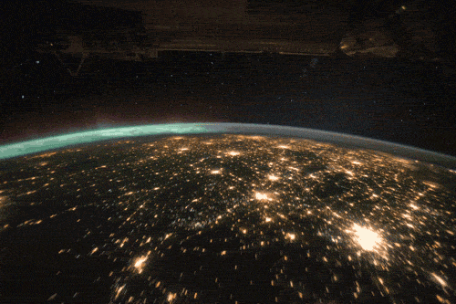

sattelite
News and Updates
About us

India has launched 209 satellites for 28 different countries
.[1] Commercial launches for foreign nations are negotiated through Antrix, the commercial arm of the Indian Space Research Organization (ISRO).
All satellites were launched using the ISRO's Polar Satellite Launch Vehicle (PSLV) expendable launch system. Between 2013 and 2015, India launched 28 foreign satellites for 13 different countries earning a total revenue of US$101 million
.[2]
ISRO successfully launched 104 satellites on 15 February 2017, of which 3 satellites are Indian satellites while the remaining are foreign commercial satellites. Ninety-six satellites are from the United States, while the others come from Israel, the UAE, Kazakhstan, the Netherlands, Belgium and Germany.
[3] It is the largest number of satellites launched on a single flight by any space agency. The previous record was held by Russia's Dnepr launcher which launched 37 in June 2014